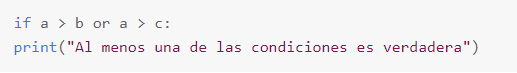

Para poder desarrollar un programa o proyecto de software debemos entender la secuencia lógica de escritura. Es algo muy importante para aplicar correctamente el lenguaje Python. En esta seccion se mostrara como digitalizar de manera correcta ciertas instrucciones lógicas.
¿Que son paradigmas de programación?
Un paradigma de programación es una manera o estilo de programación de software. Existen diferentes formas de diseñar un lenguaje de programación y varios modos de trabajar para obtener los resultados que necesitan los programadores. Se trata de un conjunto de métodos sistemáticos aplicables en todos los niveles del diseño de programas para resolver problemas computacionales.
Python es uno de los lenguajes de programación de mayor demanda gracias a su facil sintaxis y lógica, es el lenguaje de programación perfecto para inciar en el mundo de la tecnología y programación
Elementos básicos de Python
Estos dos pilares fundamentales te mostraran algunos de los conceptos y sintaxis básicos
Operadores
Nos permiten trabajar con valores de tipo booleano o numerico. Un valor booleano o bool es un tipo que solo puede tomar valores True o False .
Los comentarios en programacion son de mucha ayuda para identificar que es lo que esta sucediendo en nuestro codigo, es una muy buena practica ya que ayuda al mismo programador a comprender mas rapido que es lo que esta realizando, de esta manera se pueden poner comentarios en cualquier parte del codigo sin que este afecte su funcionamiento, debio a que las lineas de comentarios se omiten al momento de compilar el programa.
Para escribir un comentario simple bastara con colocar el símbolo "#" seguido del comentario, esto se debera hacer cada vez que pasemos de linea. EJEMPLO:
#La siguiente linea imprime un Hola Mundo Print("Hola mundo")
Tipos de Datos básicos
Tipos Numericos: Este tipo de datos se conoce como del tipo INT que nos hace referencia al tipo de dato numerico, es un espacio en la memoria donde la informacion agregada es de tipo numerica exclusivamente. Ejemplo: a = 2, b = -6
Tipo Numero Flotante: Este tipo de dato trabaja con la logica numerica igualmente, la gran diferencia esque este tipo de dato trabaja con todos los decimales posibles de una division, quiere decir que mientras el Tipo numero muestra valores enteros el tipo flotante mostrara el entero junto con sus decimales. Ejemplo: div = 1 / 3
Tipo Booleano: Este tipo de dato se centra mas en dar una condicion a una accion, quiere decir que este valor solo va a variar entre las opciones de Verdadero y Falso, esto es muy util a la hora de querer establecer una condicion antes de realizar una accion en concreto. Ejemplo: Condicion = True Condicion = False
Condiciones
Es una serie de instruciones con una sintaxis determinada para establecer condiciones a cumplir en el lenguaje de programacion, con ellas podemos dar ciertos criterios de la vida real tales como, haz esto si se cumple esto otro y si este es mayor a otro realiza esta accion, etc.
Condiciones
Condición "if"
Esta condicion es usada usualmente para comparar valores entre si
EJEMPLO:
Si "b" es mayor a "a" mostrar un mensaje de confirmación
Para validar la instruccion la condicion debe poseer una comparacion y un operador matematico, como en este caso se usa el operador "mayor que"
Condiciones
Condición "elif"
La palabra clave elif es una manera de pythons de decir «si las condiciones anteriores no fueran ciertas, entonces intente esta condición».
EJEMPLO:
Condiciones
Condición "else"
Cuando ninguna de las condiciones en el if se cumplen, desplegar la opcion else
EJEMPLO:
Estas condiciones pueden ir juntas en un bloque para establecer un listado de condiciones a cumplir
Condiciones
Condición "and"
Esta condicion nos permite añadir mas de un criterio a comparar
EJEMPLO:
Se lee como: "Si (a) es mayor a (b) y (c) es mayor a (a)"
Condiciones
Condición "or"
Esta condicion nos permite dar opciones de condicion, quiere decir que se ejecutara la accion deseada si alguna de las condiciones dadas se cumple y no todas
EJEMPLO:

Se lee como: "Si (a) es mayor a (b) ó (a) es mayor a (c)"
Una función es un bloque de código que solo se ejecuta cuando se llama. Puede pasar datos, conocidos como parámetros, a una función. Una función puede devolver datos como resultado.
funciones
Creación de una función
En python, una funcion se define usando la palabra clave "def"
EJEMPLO:
Para llamar a una función, use el nombre de la función seguido de paréntesis:
funciones
Parámetros
La información se puede pasar a funciones como parámetro. Los parámetros se especifican después del nombre de la función, dentro de los paréntesis.Puede agregar tantos parámetros como desee, solo sepárelos con una coma.
EJEMPLO:
El siguiente ejemplo tiene una función con un parámetro (fname). Cuando se llama a la función, pasamos un nombre que se utiliza dentro de la función para imprimir el nombre completo:
funciones
Valores de retorno
Para permitir que una función devuelva un valor, use la instrucción return:
EJEMPLO:
Con esto la funcion retornar los valores que le asignemos